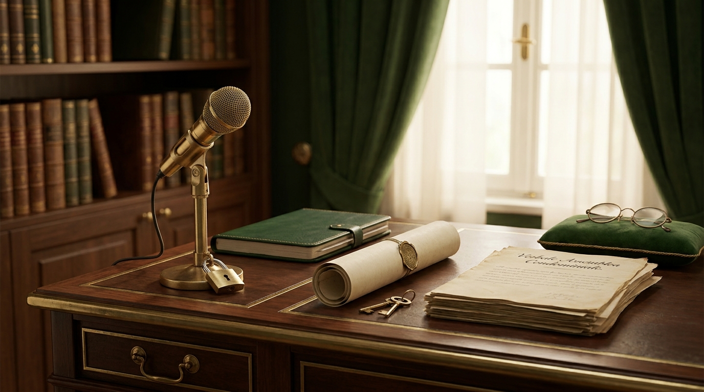

Registrare l'assemblea condominiale online: cosa dice il Garante
Le assemblee condominiali in videoconferenza sono ormai diffuse, ma cosa succede se qualcuno preme «registra»? Il Garante per la protezione dei dati personali, con le linee guida del 2025, fissa un principio netto: la registrazione è possibile solo con autorizzazione dell'assemblea e va eliminata subito dopo la stesura del verbale. Una precisazione che impone all'amministratore precise cautele operative.

Il contesto
L'assemblea in videoconferenza è entrata stabilmente nella vita condominiale. La possibilità di riunirsi da remoto, già prevista dall'art. 66, ultimo comma, delle disposizioni di attuazione del Codice civile, ha reso più semplice la partecipazione. Resta però aperta una domanda pratica: durante il collegamento è lecito registrare audio e video dei partecipanti?
La questione non è marginale. Una riunione condominiale tratta dati personali (voce, immagine, opinioni espresse, talvolta informazioni su morosità o liti tra vicini). Registrare significa creare un archivio di tali dati, con tutte le conseguenze in materia di protezione dei dati personali.
Inquadramento normativo
Con le linee guida pubblicate nel 2025, il Garante per la protezione dei dati personali ha chiarito i confini. La registrazione dell'assemblea in videoconferenza non è vietata in assoluto, ma è subordinata a due condizioni precise.
La prima è l'autorizzazione dell'assemblea stessa: i condòmini devono essere informati e devono acconsentire alla registrazione. Non basta la decisione dell'amministratore o di un singolo partecipante. La seconda condizione riguarda la conservazione: la registrazione deve essere cancellata immediatamente dopo la redazione del verbale, che resta l'unico documento ufficiale dell'assemblea.
Queste indicazioni si inseriscono nel quadro del Regolamento (UE) 2016/679 (GDPR), in particolare nei principi di liceità del trattamento (art. 6), minimizzazione e limitazione della conservazione (art. 5). La registrazione è ammessa solo finché serve allo scopo dichiarato — verbalizzare correttamente — e non oltre.
Cosa cambia per l'amministratore e i condòmini
Il principio è semplice ma le ricadute pratiche sono concrete. La registrazione non può diventare un archivio permanente. Non può essere conservata «per sicurezza», né riutilizzata in un secondo momento, né diffusa a terzi estranei al condominio.
Per l'amministratore, che agisce come titolare o responsabile del trattamento dei dati condominiali, il rischio è duplice. Da un lato la responsabilità per un trattamento illecito di dati personali, con possibili sanzioni del Garante. Dall'altro la responsabilità verso i singoli condòmini che subiscano un danno dalla diffusione non autorizzata delle loro immagini o dichiarazioni.
Per i condòmini, la tutela è chiara: nessuno può essere registrato all'insaputa degli altri, e una registrazione effettuata di nascosto da un partecipante può integrare un trattamento illecito di dati altrui.
Un punto merita attenzione. Il verbale resta il documento che fa fede. Anche quando l'assemblea autorizza la registrazione, questa ha una funzione strumentale e temporanea: serve a chi redige il verbale, non a sostituirlo. Conservare il file dopo la verbalizzazione è proprio ciò che il Garante esclude.
Le impugnazioni
Un dubbio frequente riguarda l'uso della registrazione in caso di contestazione della delibera. Anche qui vale il verbale: è quello il documento da impugnare e da esaminare. La registrazione cancellata non può essere invocata a posteriori come prova, e non deve essere conservata in vista di un eventuale contenzioso. Chi voglia tutelarsi deve far inserire a verbale, in tempo reale, le proprie dichiarazioni e i propri voti.
Cosa fare in concreto
- Mettete ai voti la registrazione all'inizio della seduta: solo l'assemblea può autorizzarla, e la decisione va annotata a verbale.
- Informate i partecipanti prima dell'avvio del collegamento, indicando finalità (supporto alla verbalizzazione) e tempi di cancellazione.
- Cancellate il file subito dopo aver redatto il verbale: non conservatelo «per memoria» né su dispositivi personali o piattaforme cloud condivise.
- Curate la verbalizzazione: fate mettere a verbale ogni dichiarazione rilevante, perché il verbale è l'unico documento che fa fede.
- Evitate registrazioni individuali e occulte: un condòmino che registri di nascosto gli altri compie un trattamento illecito di dati personali.
Disclaimer
Contributo informativo a cura di Tamburro & Partners - Avv. Giuseppe Tamburro. Non costituisce parere legale.
Ogni condominio ha una storia a sé.
Se gestisci un'amministrazione e vuoi un confronto su una specifica questione condominiale, scrivi allo studio. Ti rispondiamo entro un giorno lavorativo.